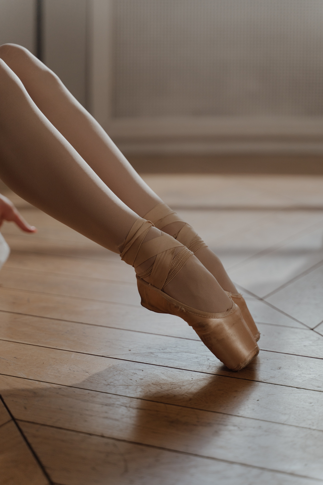

My first choice for a college is Hope College in Holland, Michigan. Hope is an attractive college to me for few reasons. The college is located in Michigan, where the rest of my family lives. It also has a high acceptance rate and a low student to teacher ratio. I hope to go to this college to major in Psychology and minor in dance. I have always been interested in psycgology and why people have certain behaviors.
After college, I hope to stay in Michigan and live somewhere close to where I grew up. I would like to work as a therapist because I like to listen to people's problems and help them work through it. Additionally, I hope to work as a dance teacher at the studio I dance at currently. I want to give back to my studio and make sure all the kids growing up there in the future have a healthy dance career.
In my persoanl free time, I love to dance and preform. I spend my life at the studio; working hard to get the perfect technique. I am also part of a 50s/60s themed preformance group called The Earth Angels (EA). EA is my favorite hobby that I have because not only do I get to preform for big audiences, I also get to hng out with best people and create lifelong bonds.
So far in life I've made two big accomplishments that I am extremely proud of. In Summer of 2023, I won the title of "Empire Dance Teen Downtown First Place Winner." I won this by taking an extra class at Empire Dance Challenge's nationals. They evaluated us and chose me to be the top winner in the dowtown category. Addiotnally, this fall I got accepted into NHS. We had to present our grades, teacher reccomendations, and an outside reccomendation to be accepted. And I was chosen to be on this team from a wide selection of kids from the juniors and seniors at Divine Child High School.
I chose the dark background for this page because the black is more visually appealing to the eyes than white. I chose the color orange for "Hope College" because the school's color is orange. I chose the color purple because it compliments the purple background nicely and it goes with the orange color. I chose white for everything else because the white pops against the black background.